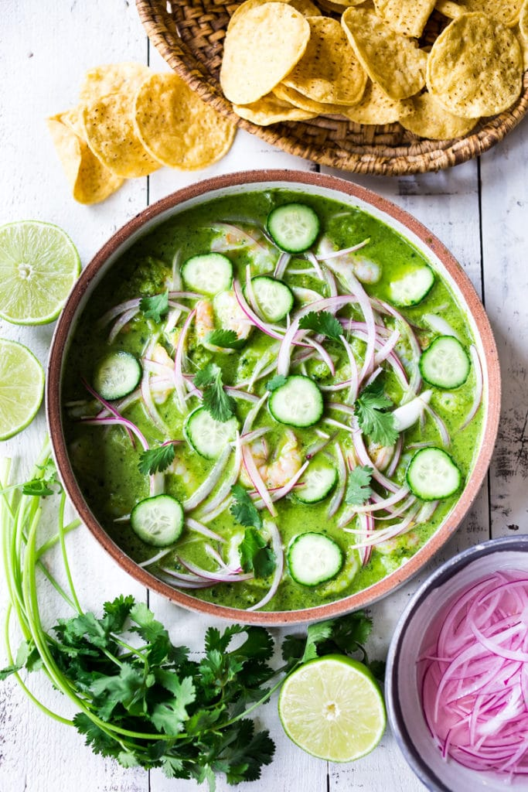

Aguachiles
How to make authentic Aguachile (aka Camarones en Aguachile), a flavorful Mexican appetizer, similar to ceviche, where shrimp is marinated in lime juice, but with the addition of chiles and cilantro. A simple and delicious appetizer that is low-carb and keto-friendly.
Ingredients
- raw shrimp
- red onion
- cilantro
- cucumber
- lime
- garlic clove
- salt
- pepper
- avocado
Aguachile Instructions
- Step 1: Cut the shrimp in half, removing its tail and any veins. This makes for easier eating and faster marinating time. If using very small shrimp, you can butterfly them, leaving one side attached if you prefer, but I find just cutting them in half is easiest and fastest.
- Step 2: Place in a shallow bowl or baking dish and squeeze with lime juice, enough to coat them well. Metal can react with the lime so use a glass or porcelain dish where shrimp have room to marinate in a single layer. Stir in a pinch of salt.
Let the shrimp marinate for 20 minutes, turning them over halfway through so each side gets in contact with the lime juice.
You will know the shrimp are “cooked” when they turn a soft pink hue. Notice the color difference from above.
- Step 3: While the shrimp marinate, prep the red onions.
Thinly slice the red onions, or use a mondolin. I used a quarter of a red onion for this Aguachile recipe. Generously salt, cover with water. Add a splash of white vinegar to brighten the color of the onion.
- Step 4: Make the aguachile marinade. Blend fresh chilies ( jalapeño or serranos) with cilantro, garlic, lime juice and salt. Blend this until it is smooth and bright, vibrant green.
- Step 5: Combine. By now the shrimp has cured (has turned pink). Leaving the lime juice in the shrimp, pour the Aguachile Marinade over the shrimp, stirring it in. Scatter with the drained onions, stirring them in a bit too, saving some for the top. Add cucumber and cilantro and refrigerate covered until ready to serve. Top with avocado right before serving- which adds a delicious creaminess to counterbalance the acid.
HOW TO SERVE AGUACHILE
Aguachile is best served nice and cold, so refrigerate until serving. Serve the Aguachile with avocado, tortilla chips or mini tostadas. Or if going grain-free, plantain chips work too! To temper the heat of this Aguachile recipe – add fresh avocado slices- which I failed to take a picture of here, but you could add upon serving. Simple lay slices of avocado overtop. I hope you love this Aguachile Recipe as much as we do- it is always a hit at a party! Let us know what you think in the comments below!